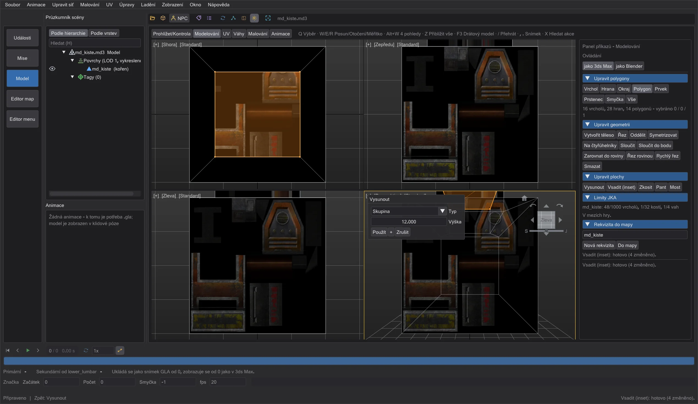
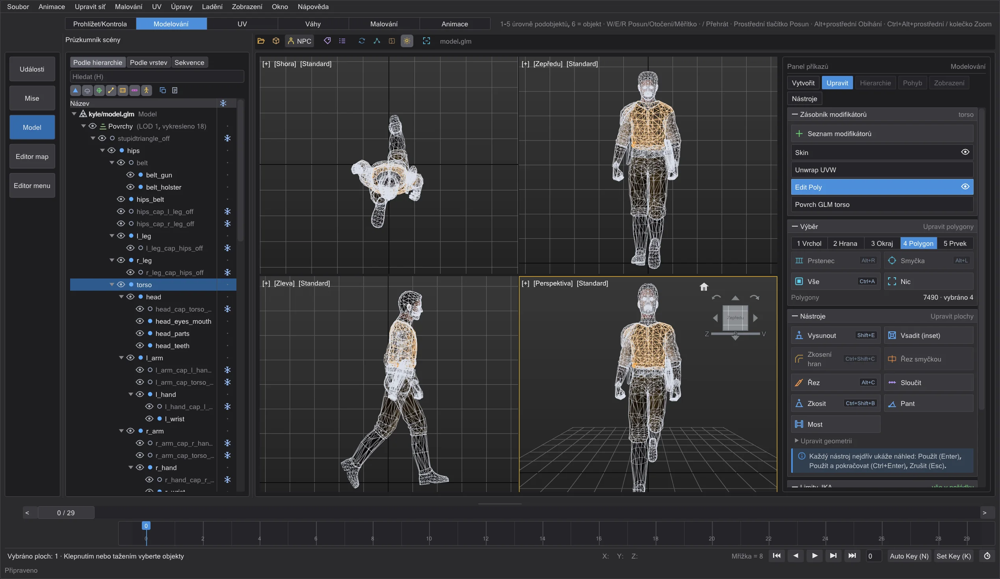
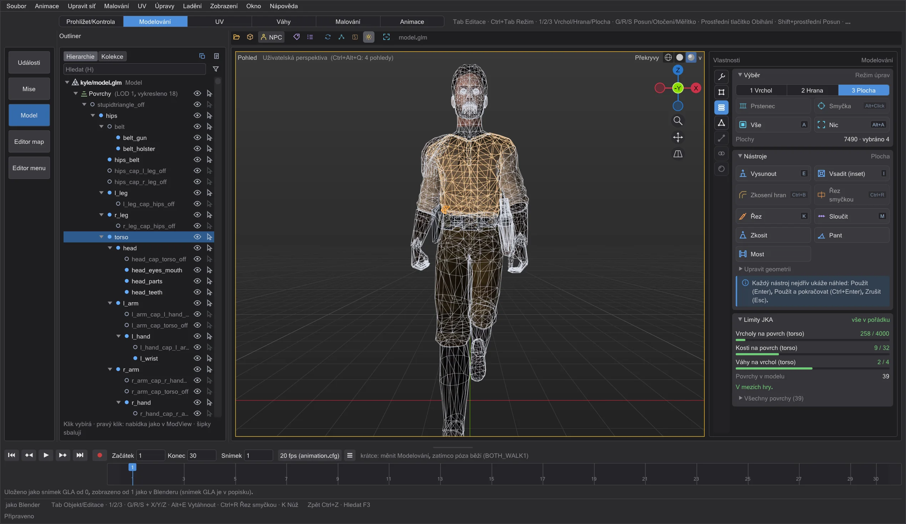
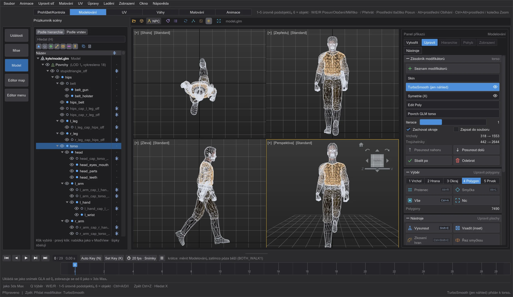
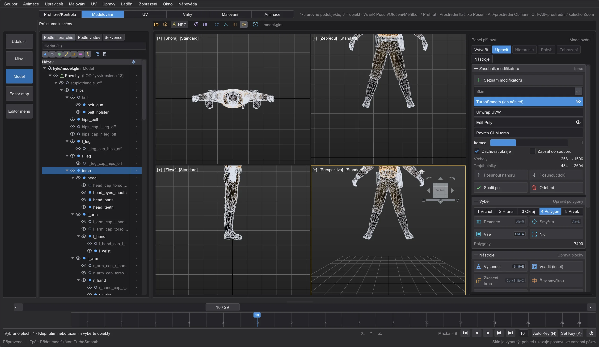
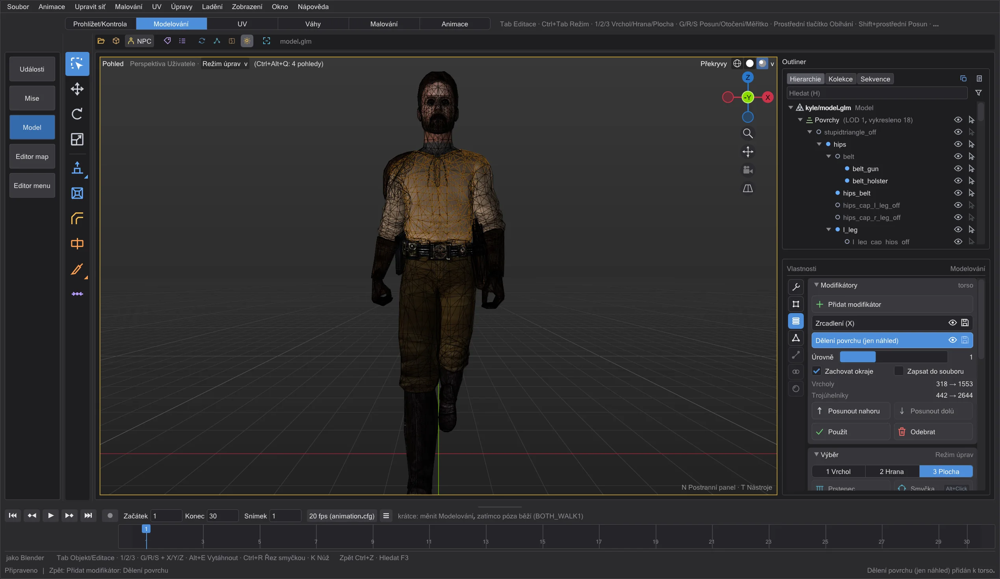
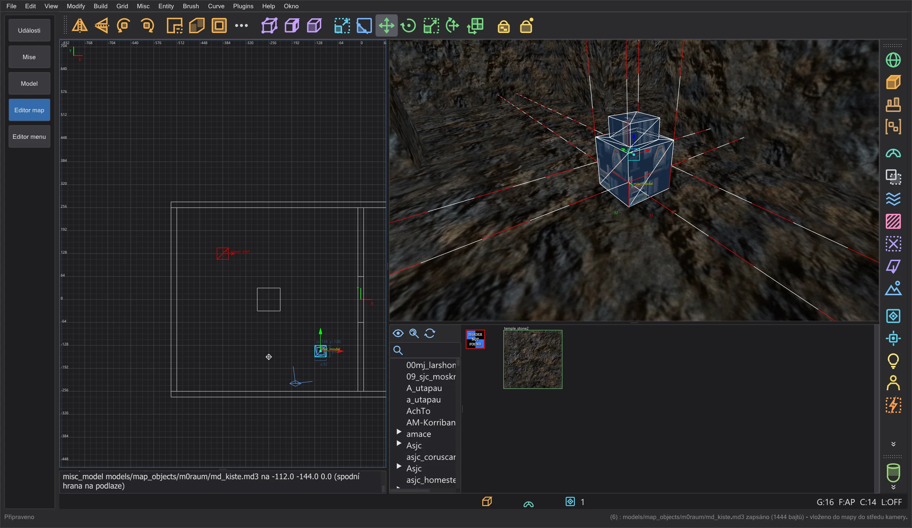

Karta Model: modelování a rekvizity pro mapu
Stavte a měňte plochy souboru .glm nebo .md3 polygonovými nástroji jako Editable Poly v 3ds Max nebo režim úprav v Blenderu - a vložte rekvizitu, třeba židli nebo bednu, jedním kliknutím do otevřené mapy.
Oblast Modelování#
Nahoře v kartě Model zvolte oblast Modelování. Klávesy 1 až 5 (režim Blender 1 až 3) volí úroveň: Vrchol, Hrana, Okraj, Polygon a Prvek; každá úroveň si drží svůj výběr jako v 3ds Max. Kliknutí vybírá, Ctrl přidává, Alt ubírá (Blender: Shift přidá nebo ubere), tažení vybere vše, co protne. Pohled kreslí polygony přes model - dva trojúhelníky souboru, které leží rovně vedle sebe, jsou jeden čtyřúhelník a Na čtyřúhelníky je spojí. W/E/R (Blender G/R/S) posouvají, otáčejí a mění měřítko výběru. Skupina Nástroje vpravo ukazuje nástroje úrovně; stejné jsou v menu Upravit síť, v pravém kliknutí pohledu a ve vyhledávání (X, v režimu Blender F3) a každá nápověda uvádí klávesu (režim 3ds Max: výchozí klávesy z tabulky Autodesk, např. Shift+E vysunutí, Ctrl+Shift+B zkosení, Ctrl+Shift+C sražení, Alt+L/Alt+R smyčka/prstenec), u nástroje bez klávesy cestu v nabídce. Bez modelu začne Nová rekvizita prázdné .md3 s texturou, která je právě zvolena v editoru map.

Panel vpravo je postaven podle schváleného návrhu: tři skupiny pod sebou. Výběr obsahuje úrovně jako řadu polí s klávesou vpředu (režim 3ds Max 1 až 5, režim Blender 1 Vrchol, 2 Hrana, 3 Plocha), pod nimi Prstenec, Smyčka, Vše, Nic a počty sítě s počtem vybraných. Nástroje ukazuje šest hlavních nástrojů jako stejně široká tlačítka se symbolem a klávesou režimu ovládání - Vysunout, Vsadit (inset), Zkosení hran, Řez smyčkou, Řez, Sloučit -, potom další nástroje úrovně pod jejím názvem z 3ds Max (Upravit vrcholy, Upravit hrany, Upravit okraje, Upravit plochy) a sbalenou Upravit geometrii. Nástroj, který na aktuální úrovni nepracuje, je zašedlý; jeho nápověda jmenuje úrovně, na kterých pracuje. Limity JKA ukazuje pruhy pro vybraný povrch - vrcholy, kosti a váhy proti limitu hry, žlutě od 90 %, červeně nad ním - a v nadpisu říká, co je limitu nejblíž; Povrchy v modelu počítá povrchy a seznam všech povrchů se otevře kliknutím.

Ostatní karty panelu obsahují to, co nepatří ke změně sítě. Základní tělesa a rekvizity jsou tam, kde model vzniká: v režimu 3ds Max na kartě Vytvořit, v režimu Blender na kartě Objekt - skupina Základní tělesa s tlačítkem pro každý tvar a Rekvizita do mapy s názvem, Nová rekvizita a Do mapy. Dokud je otevřená rekvizita, zůstává Rekvizita do mapy i na kartě oblasti, aby Do mapy zůstalo jedním kliknutím; prázdná rekvizita tam nahoře ukáže Základní tělesa. Limity JKA je také pod Nástroje (režim Blender: Data) a v režimu Blender karta Nástroj ukazuje jen výběr a nástroje.

Nástroje a schránka nástroje#
Nástroj s hodnotami otevře vlevo nahoře v pohledu malou schránku: výsledek je hned vidět a mění se živě, když táhnete hodnotu; Použít (Enter) jej ponechá, + jej ponechá a spustí stejný nástroj znovu na výsledku, Zrušit (Esc) vše vrátí. Každý nástroj je jeden krok zpět. Vysunout zvedne polygony (skupina, lokální normála nebo po polygonech) nebo z okraje vytáhne pruh; Vsadit (inset) vloží dovnitř menší kopii, každá hrana stejně daleko; Zkosit vysune a změní obrys; Zkosení hran nahradí hrany pruhy nebo uřízne vrcholy; Spojit a Řez smyčkou přidají hrany přes polygony; Řez řeže postupným klikáním na hrany a vrcholy; Svařit, Svařit k cíli a Sloučit slučují vrcholy; Zarovnat do roviny (Alt+M) přesune výběr do jedné roviny (průměrná normála, přes jeho střed); Sloučit do bodu (Ctrl+Alt+C) udělá z každé souvislé skupiny jeden vrchol; Řez rovinou řeže rovinou kolmou k ose a Rychlý řez (Ctrl+Shift+Q) podél čáry ze dvou kliknutí v pohledu; Pant otočí polygony kolem jedné z jejich okrajových hran; Most spojí dva okraje nebo dva polygony pásem čtyřúhelníků; Odebrat rozpustí hrany a vrcholy, Smazat zanechá díru; Oddělit oddělí polygony nebo je přesune do nové plochy s vlastní texturou; Symetrizovat zrcadlí polovinu; Vytvořit těleso přidá kvádr, rovinu, válec, kouli, kužel, trubku nebo torus s UV. Nástroj, který nemůže pracovat, řekne proč (například: hrana by dostala třetí polygon) a nic nezmění. Nové vrcholy převezmou UV svého polygonu a smíchají váhy kostí sousedů (nejvýše čtyři, součet 1).
V režimu Blender platí navíc klávesy režimu úprav Blenderu: Alt+klepnutí vybere smyčku hran pod myší, Ctrl+Alt+klepnutí prstenec hran (na polygonech vybere Alt+klepnutí smyčku ploch), Ctrl+L rozšíří výběr na vše propojené (Vybrat propojené), J spojí dva vrcholy a Ctrl+X rozpustí hrany (Odebrat). Zkosení hran má v okénku Segmenty a Napětí (Blender: Tvar): 0,5 zaoblí hranu do kruhu, 0,25 ji seřízne rovně; každý segment je jedna řada čtyřúhelníků, jiné hodnoty rozloží body po křivce ve stejných krocích. Kde se setkají tři a více zkosených hran, vyplní roh mřížka čtyřúhelníků jako u zkosení v Blenderu (při lichém počtu segmentů je uprostřed malý mnohoúhelník). S profilem 1 zůstane roh hranatý (jeho původní bod zůstane), konec jediné zkosené hrany ve vrcholu se čtyřmi hranami se stane vějířem trojúhelníků a mřížka, pruhy i rohové mnohoúhelníky převezmou texturové souřadnice z ploch, které nahrazují (při lichém počtu segmentů sleduje prostřední řada UV švy), vše jako v Blenderu. Nevybrané hrany mezi dvěma zkosenými hranami sdílejí jeden rohový bod.
Zásobník modifikátorů#
Modifikátory mění povrch, aniž by se dotkly jeho sítě: povrch pod nimi si ponechá to, co bylo vymodelováno, a pohled ukazuje výsledek. Každý povrch má vlastní zásobník; panel ukazuje zásobník povrchu vybraného ve stromu nebo v pohledu. V režimu 3ds Max je skupina Zásobník modifikátorů úplně nahoře na kartě Upravit, v oblasti modelování i v oblasti Weights, a čte se zdola nahoru: povrch ze souboru, Edit Poly, modifikátory, Skin. Kliknutí na Edit Poly nebo Skin přepíná mezi modelováním a Weights. V režimu Blender je skupina Modifikátory na kartě Modifikátory a uvádí jen modifikátory, shora dolů. Výběr, nástroje a gizmo dál pracují se sítí pod nimi.

Seznam modifikátorů (režim Blender: Přidat modifikátor) přidá jeden ze dvou modifikátorů. Symetrie (režim Blender: Zrcadlení) rozřízne povrch v osové rovině procházející počátkem modelu a zrcadlí jednu stranu na druhou: modelujete jednu polovinu a druhá ji následuje, váhy kostí přejdou na kosti druhé strany. TurboSmooth (režim Blender: Dělení povrchu) povrch rozdělí a zaoblí, jednou až třikrát; Zachovat okraje nechá otevřené okraje na místě, aby povrch dál navazoval na sousedy. Pod seznamem je nastavení vybraného modifikátoru a vrcholy a trojúhelníky před ním a po něm - žlutě nebo červeně, jakmile výsledek překročí, co hra na jeden povrch dovoluje.
Oko zapíná a vypíná modifikátor. Zapsat do souboru rozhoduje, zda uložení a export zapíší jeho výsledek do souboru: vyhlazení je zpočátku jen náhled, protože už jeden krok udělá z jednoho trojúhelníku šest a postava rychle překročí limit hry. Posunout nahoru a Posunout dolů - nebo tažení řádku - mění pořadí a pořadí je pořadím výpočtu. Použít (režim 3ds Max: Sbalit po, které vezme všechny zapnuté modifikátory až po vybraný) udělá z výsledku skutečnou síť povrchu v každém LOD - přesně tu síť, kterou pohled ukazoval předtím. Odebrat odebere modifikátor ze zásobníku. Každá z těchto akcí je jeden krok zpět. Stejné příkazy jsou v nabídce pravého tlačítka na řádku, v nabídce pravého tlačítka v pohledu a v Hledat všechny akce (X).
V režimu 3ds Max mají oko i Edit Poly a Skin. Vypnutý Edit Poly ukazuje plochu tak, jak byla načtena, bez pozdějších změn; vypnutý Skin ukazuje celou postavu ve vazební póze a kosti si drží svou pózu, jako ve 3ds Max (všechny plochy visí na stejné kostře). Obojí mění jen zobrazení: žádný krok Zpět, model i ukládání zůstávají stejné. Nad Edit Poly je jako ve 3ds Max Unwrap UVW - UV souřadnice plochy; kliknutí přepne do oblasti UV.


Limity JKA a LOD#
Rollout Limity JKA počítá každou plochu tak, jak by se zapsala: méně než 1000 vrcholů (SHADER_MAX_VERTEXES), nejvýše 32 kostí na plochu a čtyři váhy na vrchol, názvy a textury do 63 znaků (MAX_QPATH) a každý tag přesně jeden trojúhelník; pruh zežloutne od 90 % limitu a nad ním zčervená, a schránka to ukáže už během náhledu. Příliš mnoho vrcholů: rozdělte plochu pomocí Oddělit. Soubor .glm si ponechá ostatní úrovně LOD; Tento LOD na všechny dá všem úrovním síť zobrazené úrovně.
Rekvizita do mapy jedním kliknutím#
Pojmenujte rekvizitu v Rekvizita do mapy a klikněte na Do mapy: JK Studio ji zapíše jako .md3 do models/map_objects/<mapa>/<název>.md3 ve své vlastní složce importu (nikdy do složky hry), přepne na kartu Map a vloží ji jako misc_model na podlahu do středu kamery; tam ji posouváte, otáčíte a měníte měřítko jako každou entitu. Složka importu je v cestě editoru i q3map2 a při testu nebo zabalení jde do .pk3 mapy, takže se rekvizita zapeče do mapy s lightmapami jako každý misc_model. Pro změnu klikněte na tlačítko úprav vedle klíče model entity (nebo začněte znovu v kartě Model) - po Ctrl+S editor map znovu načte každou kopii a ty si ponechají polohu, úhly a měřítko.

Původ a licence#
Modelovací nástroje jsou odvozeny z WhiteoutLib a WhiteoutFlakes (licence BSD 3-Clause s upozorněním na díla odvozená AI, Copyright (c) 2026 Fernando Sahmkow). Pracují jen s daty Jedi Academy: plochami .glm a .md3. Text licence je v licenses/, THIRD-PARTY.md a Nápověda > O programu. Zkosení s více než jedním segmentem je převzato z Bevel v Blenderu (bmesh_bevel.cc, GPL-2.0-or-later, Copyright Blender Authors); tyto části se používají pod GPL v2 jako JK Studio.